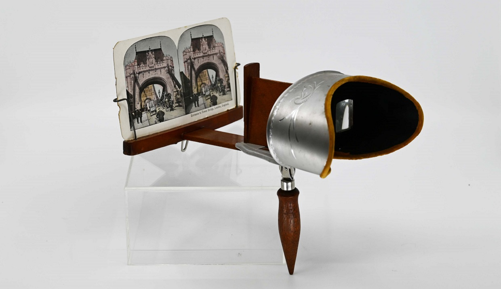
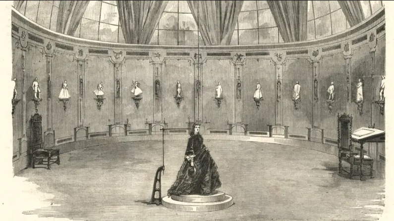

Ik ben al een paar jaar gefascineerd met het 3D scannen van objecten. Het gefragmenteerd bijhouden van hoe ik de wereld zie, wat er mij opvalt. Met een klik en een beweging heb ik een object gecapteerd en sla ik deze op in mijn 3D-scan-database. Deze fragmenten uit de wereld zeggen op zich niet veel, maar het samenbrengen in die database laat hun een geheel vormen van fragmentarische spook beelden die door mijn oog één wereld kunnen worden. Wanneer ik 3D scan maak ik een choreografie met het subject, een dans die niet over mezelf gaat, maar over het bekijken, registreren, onderzoeken van het object. Mijn oog, mijn camera, mijn zich gericht op de vormelijkheid van het object en de plaats die het inneemt.
Waar komt deze techniek vandaan? Ik wil begrijpen wie of wat die technologie heeft doen groeien en het mogelijk maakte een object, subject of een ruimte naast een 2D foto ook 3D-dimentionaal vast te kunnen leggen. Ik constateer uiteraard dat hedendaagse algoritmische technieken die gebruikt worden voor objectherkenning, hun oorsprong ook vinden in eerdere methoden om objecten ruimtelijk te coördineren en te representeren. De wortels van deze beide technologieën gaan dus gepaard met elkaar en hun oorsprong ligt in de geschiedenis van de fotografie, waarin al vroeg werd geëxperimenteerd met het ruimtelijk coördineren van objecten in de ruimte.
Tijdens de tweede helft van de negentiende eeuw verschoof de interesse naar wat het oog interpreteerde in beelden, naar wat een lens kon capteren. In de beginjaren van de fotografie werd gezegd dat een foto elk klein detail capteerde, zonder enige controle. Brook Belisle zegt in haar boek uit 2024 ‘Depth Effects, diimensionality to computation’ dat men dacht dat een schilderij veel beter was in het capteren van de essentie van wat het moest zijn en de foto een kakofonie of incoherente details vastlegde die de kijker wegbracht van het subject. Een foto bracht de mogelijkheid om een ongefilterde, objectieve blik op de realiteit te brengen en dit veranderde tijdens de negentiende eeuw de omgang met geconstrueerde beelden voor altijd. (B. Belisle, Depth Effects, Dimensionality from Camera to Computation, 2024 P. 23-27).
Deze captatie van realiteit werd aangesterkt door wat niet lang daarna werd uitgevonden door Charles Wheatstone; stereoscopie. Het diepte effect van de stereoscoop droeg bij aan het realiteitsgehalte van de fotografie. De foto werd van twee kanten getrokken waardoor er diepte ontstond en men zo meer informatie over het subject te zien kreeg. In de tijdsgeest van toen was deze uitvinding niet direct gelinkt aan een betere en accurate captering van een subject, maar eerder gezien als een soort illusie met een spectakelulair gehalte. Deze uitvinding werd bijna gelijktijdig verspreid met de uitvinding van de fotografie. Volgens Belisle waren stereoscopische foto’s vaak populairder dan de gewone fotografie en speelden ze een grote rol bij de fotografie als massamdium. De foto’s werden eerst op een Daguere glasplaat geprint en later op papier en kregen de naam ‘stereogrammen’ en moesten bekeken worden door een stereograaf.

(Afbeelding: Stereoscoop en stereograaf (ca. 1900). Collectienummers 76.60.1 en 77.34.7.85. Materiaal: hout, aluminium, karton. Overgenomen van The Village at Black Creek (2023): https://blackcreek.ca/exhibits/out-of-the-box-exploring-artifacts/stereoscope/)
Wanneer in 1859 de beeldhouwer Francois Willème in zijn modelstudio stond kreeg hij het idee om zijn modellen driedimensionaal te capteren. Hij was al jaren op zoek naar een manier waarop hij zijn model kon boetseren zonder zijn materiaal of het model te verzetten. Zo ontwikkelde hij de Photosculpture (B. Belisle, Depth Effects, Dimensionality from Camera to Computation, 2024, P. 28) een vroeg systeem om driedimensionale vormen te reconstrueren uit meerdere fotografische perspectieven. Door een reeks simultaan gemaakte beelden rondom een subject of model te projecteren en te vertalen naar klei, ontstond een fysieke synthese van verschillende gezichtspunten. Dit proces maakte dimensionaliteit afhankelijk van zowel technische reconstructie als de belichaamde perceptie van de kijker.
“Om een fotosculptuur te maken, poseerde een onderwerp eerst recht onder een schietlood dat aan het plafond hing, op een klein, rond platform dat zorgvuldig was gemarkeerd in vierentwintig taartpuntvormige secties, in een ronde ruimte waarvan de doorlopende wand was verdeeld in vierentwintig panelen. Vierentwintig camera’s waren verborgen achter deze wandpanelen en keken door kleine openingen die om de 15 graden waren geplaatst. Deze camera’s konden gelijktijdig worden geactiveerd met behulp van een voetpedaal en een systeem van koorden om hun sluiters te bedienen, om zo een reeks beelden van het onderwerp vanuit vierentwintig perspectieven vast te leggen. Deze beelden werden vervolgens omgezet in lantaarnplaatjes en geprojecteerd in een beeldhouwatelier, waar een kleibuste onder een schietlood werd geplaatst op een roterend rond platform dat was gemarkeerd met vierentwintig secties. Elk beeld werd geprojecteerd op een scherm achter het kleimodel, waarbij het schietlood in het beeld werd uitgelijnd met dat in het atelier. Beaumont Newhall beschrijft hoe Willème of een van zijn assistenten de omtrek van elk geprojecteerd beeld op de klei zou overtrekken met behulp van een pantograaf.” (vertaalde quote van B. Belisle, Depth Effects, Dimensionality from Camera to Computation, 2024, P. 28-29)

(Afbeelding: Photosculpture, Hawkes, E. (2022, October 2). In a way, 3D scanning is over a century old. Hackaday. https://hackaday.com/2022/10/02/in-a-way-3d-scanning-is-over-a-century-old/)
Vervolgens bespreekt Belisle het werk van Eadweard Muybridge, die met zijn sequentiële fotografie beweging analyseerde door tijd op te splitsen in discrete momenten. Zijn reeksen tonen hoe opeenvolgende beelden ruimtelijkheid suggereren doordat verschillende camerastandpunten samen een volumetrisch begrip van beweging oproepen.
De abstractie van beweging, die dus al zichtbaar was in de fotografische experimenten van Eadweard Muybridge, zorgde in de vroege twintigste eeuw ervoor dat er verder werd onderzocht door Frank B. Gilbreth en Lillian Gilbreth in de zogenoemde time and motion studies. Zij probeerde met een reeks foto’s de beweging van arbeiders vast te leggen.
Hun onderzoek bouwde voort op fotografische technieken zoals chronofotografie en stereoscopie en introduceerde nieuwe methoden om beweging driedimensionaal te begrijpen. Zo gebruikten ze meervoudige en lange belichtingstijden om de bewegingen van arbeiders (bijvoorbeeld bij naaien, boren of hameren) vast te leggen. Door kleine lichtbronnen aan de handen van arbeiders te bevestigen, werden de trajecten van beweging zichtbaar als lijnen in de foto’s, die zij cyclegraphs noemden (B. Belisle, Depth Effects, Dimensionality from Camera to Computation, 2024, P. 33-34). Deze beelden maakten het mogelijk om beweging visueel te abstraheren tot analyseerbare patronen.
Daarnaast gebruikten de Gilbreths rasterstructuren (“screens of known dimensions”) rondom de arbeider om bewegingen nauwkeurig te lokaliseren en te meten. Deze rasters fungeerden als coördinatensystemen waarmee de positie en vorm van bewegingen kwantitatief konden worden vastgelegd en vertaald naar modellen. Dit sluit aan bij bredere negentiende-eeuwse ontwikkelingen waarin fotografie werd ingezet om ruimte meetbaar te maken, bijvoorbeeld in stereogrammen voor geologisch onderzoek. Het uiteindelijke doel van de Gilbreths had weinig met kunst te maken, maar eerder met optimalisatie van bepaalde werkbewegingen. Door de bewegingen van e arbeiders te analyseren, te vergelijken en te modelleren, wilden ze hun bewegingen efficiënter maken. Hun werk resulteerde in gestandaardiseerde bewegingsmodellen die arbeiders konden leren.
Het werk van de Gilbreths markeert echter een kantelpunt, waarin methoden om ruimtelijke relaties in foto’s te kwantificeren verschoven van zichtbare, materiële hulpmiddelen, zoals fysieke rasterstructuren, naar een meer abstract kader dat het beeld zelf structureert. (B. Belisle, Depth Effects, Dimensionality from Camera to Computation, 2024, P. 35) De experimenten wijzen vooruit naar latere ontwikkelingen in digitale en computationele beeldverwerking die nog weinig te maken hebben met het trachten capteren van een subject ter studie voor kunstpraktijken, maar vormt een vroege stap in een proces waarin visuele informatie wordt vertaald naar numerieke data en abstracte, wiskundige structuren. Deze ontwikkelingen worden later verder versterkt door digitale en computationele technologieën, die het mogelijk maakten foto’s om te zetten in numerieke data en daarmee de zichtbare vormen van de werkelijkheid te beschrijven in abstracte, wiskundige dimensies. Een nieuwe vorm van kijken.
Wat ik waardevol vind, is dat één van de vroegste experimenten met 3D-captatie zijn oorsprong vindt bij een kunstenaar. Deze nu alomtegenwoordige technologie ontstond uit de poging van een kunstenaar om zijn model zo realistisch mogelijk vast te leggen, een voorstudie, een experiment. Die speelse, verkennende geest is ergens verloren gegaan in de door ontwikkeling van deze technologieën, en dat is precies wat ik niet wil vergeten. Deze techniek is geboren uit de kunst, en zou daar, wat mij betreft, ook thuis moeten blijven.
Hier onder zijn een paar objecten of plaatsen die ik zag:
object 1 object 2 object 3 object 4 object 5 object 6 object 7 object 8 object 9 object 10 object 11